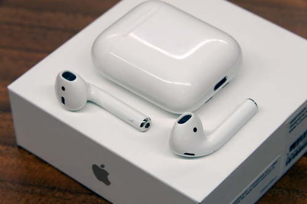
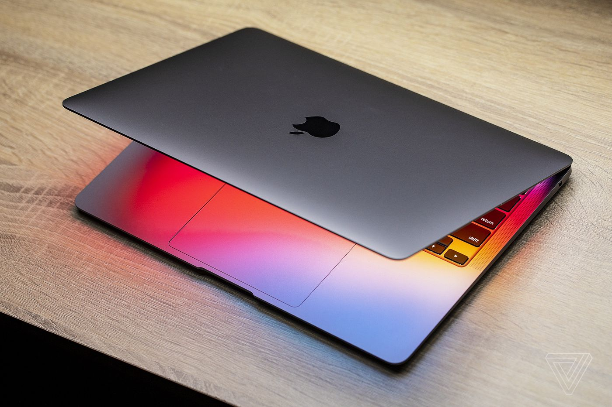
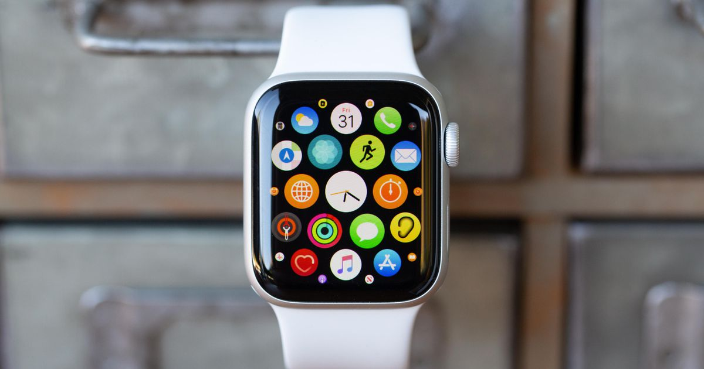

A14 Bionic, the fastest chip in a smartphone. An edge-to-edge OLED display. Ceramic Shield with four times better drop performance. And Night mode on every camera. iPhone 12 has it all — in two perfect sizes. A14 Bionic is the first 5-nanometre chip in the industry, with advanced components literally atoms wide. Forty per cent more transistors rev up speeds while increasing efficiency for great battery life. And a new ISP powers Dolby Vision recording — something no pro movie camera, let alone any other phone, can do. The LiDAR Scanner on iPhone 12 Pro measures how long it takes light to reflect back from objects, so it can create a depth map of any space you’re in. Because it’s ultrafast and accurate, AR apps can now transform a room into a realistic rainforest or show you exactly how a new sneaker will fit.
Qualified Purchasers can receive Promotion Savings when they purchase an eligible Mac or eligible iPad with eligible AirPods at a Qualifying Location. Only one Promotion Product per eligible Mac or eligible iPad per Qualified Purchaser. Offer subject to availability. While stocks last. Subject to terms and conditions herein. Apple Pencil and Magic Keyboard are sold separately. Trade-in values will vary based on the condition, year and configuration of your trade-in device and is computed on Maximum Retail Price. You must be at least 18 years old to be eligible to trade in for credit. Not all devices are eligible for credit. More details are available from Apple’s trade-in partner for trade-in and recycling of eligible devices. Restrictions and limitations may apply. Credit applied towards your new iPhone will be based on the received device matching the description you provided when your estimate was made and upon validation by the courier. Apple reserves the right to refuse or limit the quantity of any device for any reason. Special pricing available to qualified customers. To learn more about how to start qualifying for special pricing, talk to an Apple Specialist in a store or give us a call on 000800 040 1966.

Some new collections are available in Air Pods,MacBook Air,HomePad Mini. We refined the details of comfort, creating a new class of in-ear headphones with a customisable fit that forms an exceptional seal for Active Noise Cancellation. You’ll feel your music, not your headphones.Large Medium Small It’s here. Our first chip designed specifically for Mac. Packed with an astonishing 16 billion transistors, the Apple M1 system on a chip (SoC) integrates the CPU, GPU, Neural Engine, I/O and so much more onto a single tiny chip. With incredible performance, custom technologies and industry-leading power efficiency,1 M1 is not just a next step for Mac — it’s another level entirely. Image result for apple watches .The Apple Watch Series 3 is the most affordable Watch in Apple's lineup, and it makes a good entry-level Apple wearable. Currently, the 38mm Series 3 is $169 at Walmart and Amazon in either white or black, which is $31 off its usual price of $199.
Active Noise Cancellation for immersive sound. Transparency mode for hearing what’s happening around you. A customisable fit for all-day comfort. Magic like you’ve never heard. Sound that cuts out the noise. Everything you heard is unheard of A chip with serious chops. charge wireless unless tirelessly
Our thinnest,lightest notebook,completely transformed by the Apple M1 chip. CPU speeds up to 3.5x faster.GPU speeds up to 5x faster.Our most advanced Neural Engine for up to 9x faster ML. The longest battery life ever in a MacBook Air. And a silent,fanless design.This much power has never been this ready to go.
Store your boarding pass, movie tickets or rewards cards with Wallet. Get a tap when it’s time to turn with Maps. Get the exact workout metrics you need.Down to the decimal. Store your favourite songs. Or listen to over 75 million with Apple Music. Show your true colours with interchangeable straps.
Scheduled Delivery Options Available for certain PIN codes; you can choose a scheduled delivery method for each item on your order Express Delivery (Free) 1 - 2 days after shipping Pre-10.30 am Delivery 1 - 2 days after shipping, before 10.30 am Pre-12 pm Delivery 1 - 2 days after shipping, delivered before 12 pm We keep you informed Shortly after you place your order, you’ll receive an e-mail to confirm that it is being processed. Once your order ships, you’ll receive an email and text message containing your order details, courier and tracking information. If ordering as a gift, you may wish to provide your own email address and not the address of the recipient. Make sure that the email address and telephone number on your order is correct. If you do not receive the emails, check your spam folder. You can track the status of your order here.